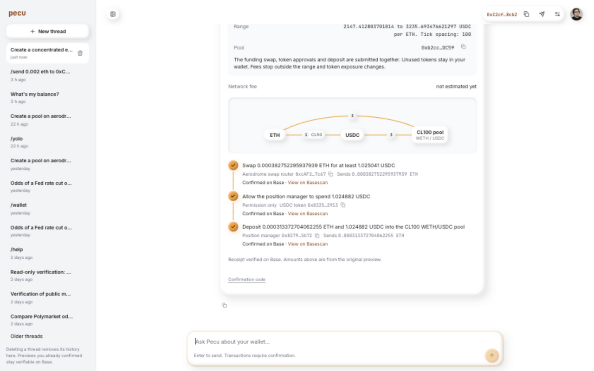
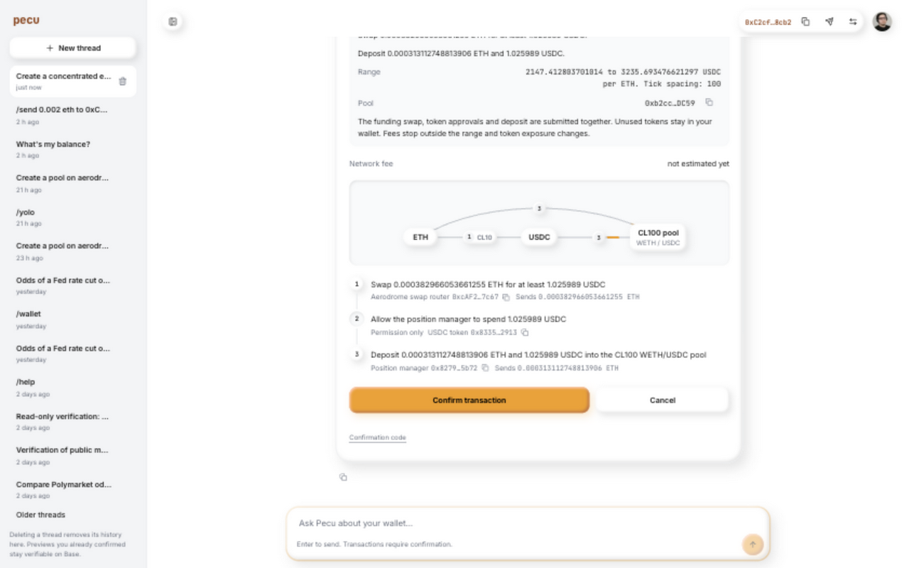

Pecu latency fixes
The exact prompt now completes in 27.073 seconds on the server, down from 95.314 seconds: 71.6% less time. The browser showed the fresh preview at 28.858 seconds. This is a measured improvement, not instant planning.
Open the thread · Original investigation
Production measurements
| Measurement | Before | Observed after |
|---|
| Server request, identical prompt | 95.314 s | 27.073 s; browser complete at 28.868 s |
| Liquidity tool | 28.593 s | 7.142 s; underlying Aero Worker 6.470 s |
| Model calls | Four, 29.667 s total | Two completed calls, 9.021 s total; final prose generation interrupted |
| First browser stream frame | Not instrumented | 1.447 s in the final replay; earlier replays 0.37–0.57 s |
| Complete token catalog | 5.086 s for 35,256 entries | 19 ms from edge; 574 ms from R2 with an empty edge cache |
| Five-pool discovery/read | 11.417 s cold | 0.813 s warm on the final Worker; 1.261 s browser. Zero R2 writes, 12 edge hits. |
These are individual production observations, not a latency percentile or a controlled before/after distribution. Live prices, wallet balances, model history and cache warmth changed. Component cache gains do not imply an instant completed transaction plan.
Shipped changes
- Removed the shared Aero request queue. Each request owns its SDK client and uses bounded RPC concurrency.
- Cached the full token catalog, swap topology, pool discovery and verified pool locators. Removed the known-token lookup shortcut. A private R2 snapshot backs the local Cloudflare edge cache; expiry is checked at both tiers. Balances, reserves, allowances, prices, quotes and plans remain fresh.
- Filter pools and apply the limit before hydration. Reuse the planner client and its request-local reads. Pool results include spot price and units, avoiding a separate price probe.
- Deliver successful liquidity previews directly from the durable tool result. A final prose generation is unnecessary.
- Refresh the transaction ledger before inference so cancelled or executed previews cannot be mistaken for pending actions. Fixed the invalid Aave tool schema and check every registered schema.
- Show live routing, model wait, generation and tool stages in Agent and Stocks chat. Close terminal stages on success and error.
- Correlate browser, main Worker, OpenCode and Aero RPC events using one opaque trace ID. PostHog now has root traces, runtime startup, model/tool spans, RPC children and browser render metrics. Analytics batches and drains during the turn.
- Preserve a confident Jev tool-family selection when its route confidence is low. Record returned model version, confidence, probabilities and fallback reason.
Jev result
The original prompt repeatedly returned route confidence 0.86 and DeFi-family confidence 0.99. The deployed fallback now keeps that DeFi scope. A separate five-prompt experiment tested branch-specific liquidity questions and source-value selection. Its positive example did not reach the required field-confidence threshold, so direct Jev-to-transaction dispatch was not shipped. The typed liquidity planner remains in use.
Transaction verification
GPDTDT executed successfully at 18:51:47 Rome time on 26 September. Francesco confirmed the fresh preview before its expiry. B77HZ9 and K6HFB9 expired without execution. The approved batch swapped 0.000382752295937939 ETH, approved 1.024882 USDC for the position manager and created position NFT 77024465 in the specified Base CL100 WETH/USDC pool.
Independent Base RPC verification confirmed receipt success, NFT ownership by 0xC2cf95Eaf5DBb58ecEe90FA78aB3Ccd036D68cb2, tick spacing 100, ticks −199600 to −195500 and nonzero liquidity. Actual swap output was 1.029756 USDC; actual deposit was 0.000313372704060914 ETH and 1.022983 USDC. Unused funds remained in the wallet. The post-execution ETH balance was 0.000696125000001536 ETH. The receipt's outer transaction fee was 0.000004254628081074 ETH; the account-abstraction operation used a paymaster, so this is not presented as a wallet debit.
Confirmed transaction on Base · Approved preview and result · Independent RPC receipt · Position ownership and balance

Validation and limits
The full 509-test suite passed, including five Workerd integration tests. Follow-up shared-cache and terminal-stage changes passed 18 targeted tests, type checking, lint and the Aero build. Web tests passed 89/89 and the web and public docs builds passed.
One replay incorrectly repeated an old preview and was excluded; that led to the transaction-ledger fix. Another replay was interrupted by this agent starting it before deployment finished and was excluded. Its resumed request asked whether “create a pool” meant a new pool or a position; the existing-pool option matched the original executed transaction. The clarification took 32.274 seconds and the fresh-preview follow-up took 32.044 seconds. Neither is presented as an equivalent single-turn benchmark.
Analytics is best effort, not an exactly-once outbox. RPC spans can nest or overlap; summing them overstates the critical path. The final replay still needed a 6.845-second cold pool-catalog scan and 9.021 seconds in models. Its token catalog and pool locators were cached; swap topology was cold. The five-pool tool took 10.154 seconds. A follow-up patch skips unchanged locator writes, removing an additional measured source of overhead. It is verified separately, not credited to the 27.073-second replay.
No invalid-tool or stalled-response warning appeared in the final sampled Cloudflare request window. Crossmint still logged a duplicate logger-initialization warning; this is not evidence of a repeated transaction. All observations are scoped to this replay, not proof that every upstream failure is eliminated.
Pecu web and X Chat share the affected backend. Both OpenRouter and ChatGPT use the shared progress/preview plumbing; live replay used OpenRouter. BeeGreat mobile, Android, CLI, voice and iMessage use separate agents and were not changed. Sugar and EVM packages were not edited.
Deployment readback: main Worker f0277651-e868-4b84-b11f-ad65c89e8f7e; Aero Worker 675edd0a-bd7c-4e56-a069-85b067ab887a; web a65dcad8-3a9a-422a-8444-c498844b0e3f; docs de695565-5fb5-4a2f-a861-9d897a580b5e. Final source HEAD matches remote main at 4d8f73393fea15a9065f4e50d1aaf7f6b342031b. Unrelated working-tree changes were preserved.
Evidence and release references
Source commits: 1008764f, aad3cad2, 17c84216, 5f605a83, b2f5ff23, d639f8d9, 22da5085, 4d8f7339. The token whitelist added in 5f605a83 was removed by b2f5ff23.
Final exact-prompt replay and preview · Earlier browser event frames · Jev evaluation · Final PostHog trace
Cloudflare Cache API locality · R2 consistency and API · TypeSafe source-value extraction
Browser evidence
